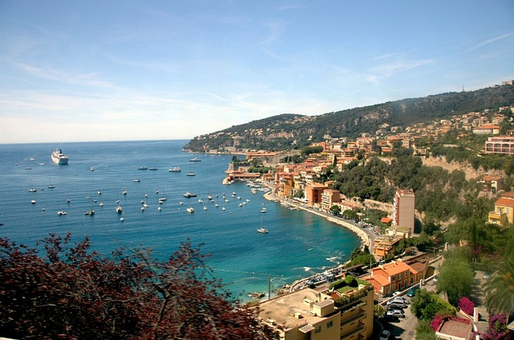
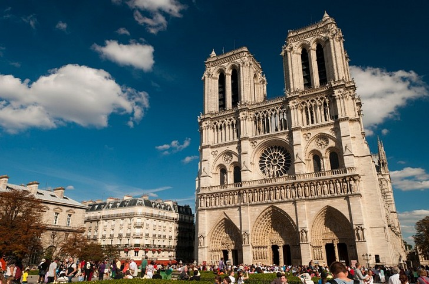
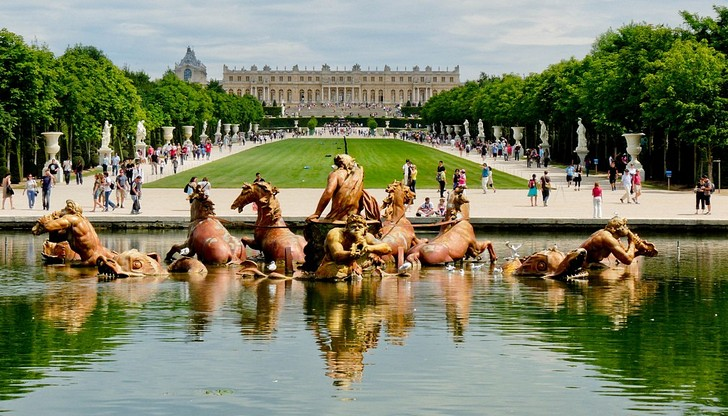
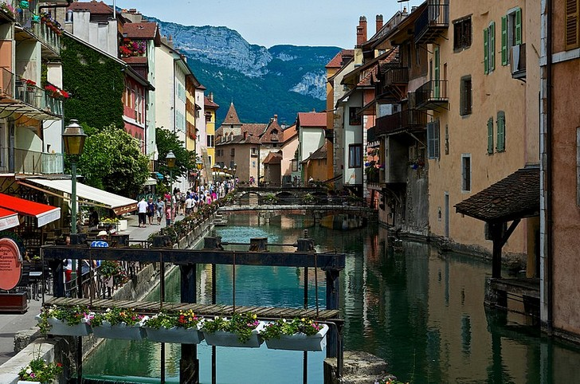
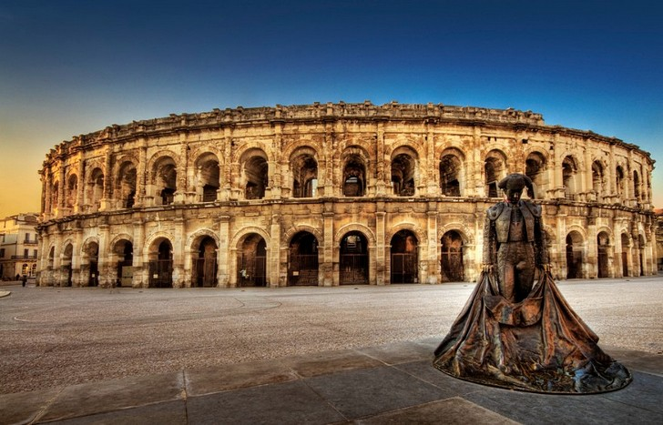
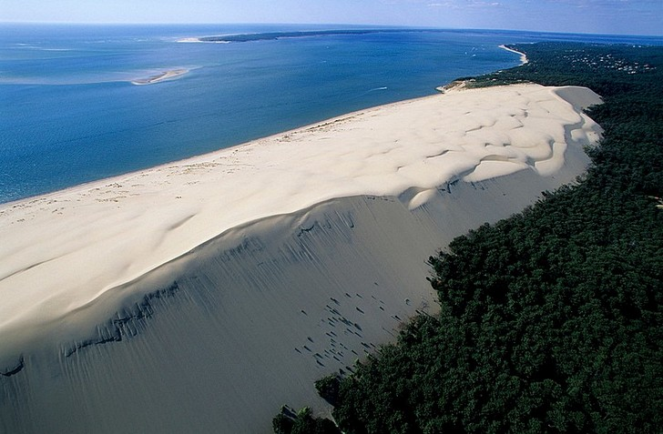

Это одно из лучших в мире мест для отдыха. Лазурный берег или Французская Ривьера тянется от границы с Италией до города Тулон и известен на весь мир невероятно красивыми пляжами, приятный климатом и комфортными условиями для отдыха. Единственный минус этого побережья Средиземного моря протяженностью 300 километров — очень высокие цены на отдых и недвижимость.
Описывать этот собор, прославленный в романе и мюзикле Нотр-Дам де Пари, а также в десятках кинофильмов и мультфильмов — дело неблагодарное. Лучше один раз посетить самый знаменитый храм Франции и увидеть его роскошные витражи, светлые своды и главную реликвию — Терновый венец Иисуса Христа. Вы станете одним из 14 миллионов человек, которые ежегодно посещают собор Парижской Богоматери.
Символ королевской власти, роскоши и богатства. Именно такие ассоциации вызывает Версаль, без всякого сомнения — самый популярный и известный дворец во всем мире. Он отлично сохранился, вместе со своим французским парком, фонтанами, шикарной лепниной и изящной мебелью. Так и кажется, что сейчас из-за поворота аллеи выйдет Мария-Антуаннета с фрейлинами, а в огромный зал ворвется свита Людовика Шестнадцатого.
Этот небольшой городок, где живут всего около 50 тысяч человек, находится совсем недалеко, в 60 километрах, к югу от Женевы. Известен он своим озером, на берегу которого, собственно, и находится, а также средневековым замком, который был превращен в музей прямо в центре города. Есть в Анси также готическая церковь и дворец на острове посреди озера.
Да-да, во Франции есть свой собственный Колизей! Находится эта арена, построенная еще в первом веке нашей эры в городе Ним, который известен огромным количеством старинных построек, сохранившихся со времен Древнего Рима. Амфитеатр в Ниме неплохо сохранился и до сих пор используется в качестве сцены на концертах и других мероприятиях.
Самая большая дюна из песка на территории Европы. Сверху выглядит, как огромная песчаная волна, нахлынувшая на зеленый берег. Находится Дюна в Пиле, в Аквитании, на берегу Аркашонского залива. Примечательно, что этот гигантский вал песка каждый год перемещается на пять метров вглубь континента, вытесняя дома, деревья и автодороги.
 Наверх